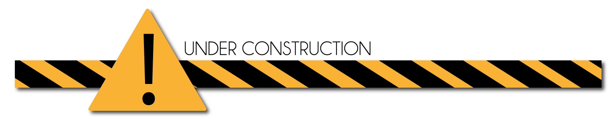

ozz-animation
Open source c++ skeletal animation engine and tools

ozz-animation is an open source c++ 3d skeletal animation engine. It provides runtime character animation playback functionalities (loading, sampling, blending...), with full support for Collada and Fbx import formats. It proposes a low-level renderer agnostic and game-engine agnostic implementation, focusing on performance and memory constraints with a data-oriented design.
ozz-animation comes with Collada and Fbx toolchains to convert from major Digital Content Creation formats to ozz optimized runtime structures. Offline libraries are also provided to implement the conversion from any other animation and skeleton format.

Documentation is temporarily unavailable while migration to github is in progress.
Contributions are welcome: code review, bug fix, feature implementation...
ozz branching strategy follows gitflow model. When submitting patches, please:
- Make pull requests to develop branch for features, to release branch for hotfixes.
- Do not include merge commits in pull requests; include only commits with the new relevant code.
- Add all relevant unit tests.
- Run all the tests and make sure they pass.
ozz-animation is hosted at http://github.com/guillaumeblanc/ozz-animation and distributed under the MIT License (MIT).